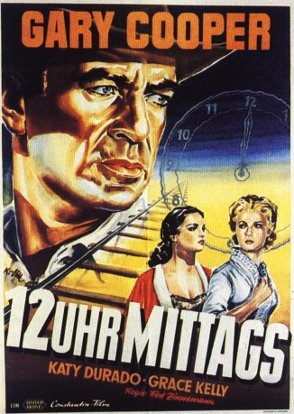
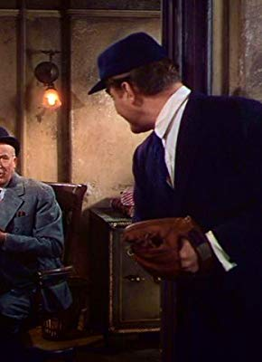
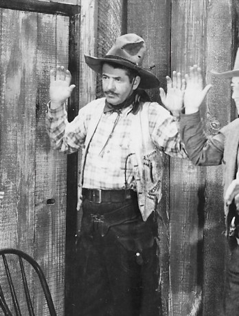
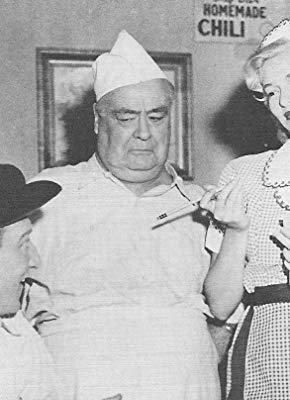

#2021 Zwölf Uhr mittags
Alternativ: High Noon
Auszeichnungen: 4 Oscars gewonnen für 3 Oscars nominiert 4 GoldenGlobes gewonnen
 
 IMDB-Wertung: 8.0 / 10
IMDB-Wertung: 8.0 / 10  Metascore: 89
Metascore: 89 
Marschall Will Kane möchte seiner Frau Amy zuliebe seinen Posten aufgeben, als seine Stadt plötzlich von dem Banditen Frank Miller und seiner Bande heimgesucht wird. Fest entschlossen, seine Stadt nicht im Stich zu lassen, bereitet sich der allseits beliebte Kane für den Kampf gegen die Banditen vor. Bald muss er jedoch feststellen, dass seine Mitbürger ihm aus Angst jegliche Hilfe verweigern und ihm stattdessen den Rücken kehren. Für Kane beginnt ein einsamer Kampf um das Wohlergehen seiner Kleinstadt.
Jahr: 1952
Dauer: 85 Minuten
FSK: 12
Land: USA Studio: A United Artists Release alsoTonspuren:
Untertitel: Deutsch,
Auflösung: 1080p (1456x1080) Größe: 6062 MB
Genre: Drama, Western
Regisseur:  Fred Zinnemann
Fred Zinnemann
Drehbuch: Carl Foreman, John W. Cunningham
Soundtrack: Dimitri Tiomkin
Darsteller:
 Gary Cooper als Marshal Will Kane
Gary Cooper als Marshal Will Kane Thomas Mitchell als Mayor Jonas Henderson
Thomas Mitchell als Mayor Jonas Henderson Lloyd Bridges als Deputy Marshal Harvey Pell
Lloyd Bridges als Deputy Marshal Harvey Pell- Katy Jurado als Helen Ramírez
 Grace Kelly als Amy Fowler Kane
Grace Kelly als Amy Fowler Kane- Otto Kruger als Judge Percy Mettrick
- Lon Chaney Jr. als Martin Howe
 Harry Morgan als Sam Fuller
Harry Morgan als Sam Fuller Lee Van Cleef als Jack Colby
Lee Van Cleef als Jack Colby Robert J. Wilke als Jim Pierce
Robert J. Wilke als Jim Pierce Sheb Wooley als Ben Miller
Sheb Wooley als Ben Miller John Doucette als Trumbull , uncredited
John Doucette als Trumbull , uncredited Jack Elam als Charlie - Drunk in Jail , uncredited
Jack Elam als Charlie - Drunk in Jail , uncredited Ian MacDonald als Frank Miller
Ian MacDonald als Frank Miller- Eve McVeagh als Mildred Fuller
 Morgan Farley als Dr. Mahin - Minister
Morgan Farley als Dr. Mahin - Minister-  Harry Shannon als Cooper
- Ernest Baldwin als Townsman , uncredited
- Guy Beach als Fred - Coffinmaker , uncredited
- Jeanne Blackford als Mrs. Henderson , uncredited
 Larry J. Blake als Gillis - Saloon Owner , uncredited
Larry J. Blake als Gillis - Saloon Owner , uncredited- John Breen als Church Member , uncredited
-  Roy Bucko als Barfly , uncredited
- Nora Bush als Townswoman , uncredited
- Howland Chamberlain als Hotel Clerk , uncredited
- Virginia Christine als Mrs. Simpson , uncredited
- Cliff Clark als Ed Weaver , uncredited
 Ben Corbett als Townsman , uncredited
Ben Corbett als Townsman , uncredited- Russell Custer als Barfly , uncredited
 Tex Driscoll als Church Member , uncredited
Tex Driscoll als Church Member , uncredited- Paul Dubov als Scott , uncredited
-  Dick Elliott als Kibbee , uncredited
- Virginia Farmer als Mrs. Fletcher , uncredited
- Rudy Germane als Townsman , uncredited
- Tim Graham als Sawyer , uncredited
- Tom Greenway als Ezra , uncredited
 Harry Harvey als Coy , uncredited
Harry Harvey als Coy , uncredited Chuck Hayward als Townsman , uncredited
Chuck Hayward als Townsman , uncredited Michael Jeffers als Townsman , uncredited
Michael Jeffers als Townsman , uncredited- Kay Koury als Townswoman , uncredited
 Paul Kruger als Church Member , uncredited
Paul Kruger als Church Member , uncredited- Ann Kunde als Townswoman , uncredited
 Nolan Leary als Lewis , uncredited
Nolan Leary als Lewis , uncredited Tom London als Sam , uncredited
Tom London als Sam , uncredited- Merrill McCormick als Fletcher , uncredited
- Billy McCoy als Townsman , uncredited
 James Millican als Deputy Sheriff Herb Baker , uncredited
James Millican als Deputy Sheriff Herb Baker , uncredited Kansas Moehring als Townsman , uncredited
Kansas Moehring als Townsman , uncredited- Jack Montgomery als Townsman , uncredited
- William Newell als Jimmy - Drunk with Eye Patch , uncredited
Datei: X:\HD-Western-1900-1959\Zwölf Uhr mittags (1952, FSK12, 1456x1080).mkv seit 25.09.2015
Festplatte: HD Eastern+Western
 Es gibt insgesamt 98 Filme in der Gruppe 'HD-Western-1900-1959'
Es gibt insgesamt 98 Filme in der Gruppe 'HD-Western-1900-1959'